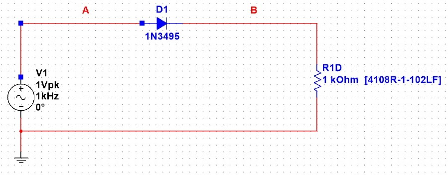
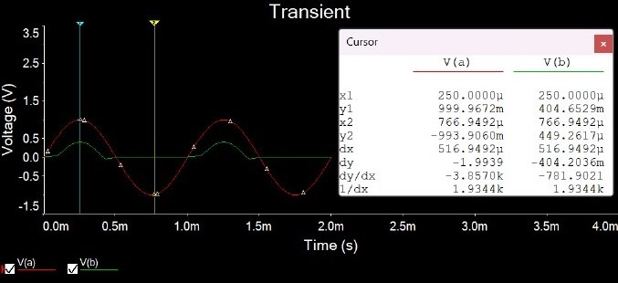

Simulasi Dioda
Simulasi Dioda
Dioda merupakan komponen semikonduktor yang paling sederhana. Kata dioda berasal dari pendekatan kata yaitu dua elektroda yang mana (di berarti dua) mempunyai dua buah elektroda yaitu anoda dan katoda. Dioda termasuk kedalam ketegori komponen elektronika aktif. Dioda terbentuk dari bahan semikonduktor tipe P dan N yang digabungkan. Dengan demikian diode sering disebut PN junction. Dioda memiliki sifat dapat menghantarkan arus pada tegangan maju, serta menghambat arus pada tegangan balik (penyearah). Dioda memiliki dua kaki, yakni kaki anoda dan kaki katoda.
Disini kami diminta oleh Dosen Elektronika kami untuk mencoba bereksperimen dengan Multisim di device kami. Saya mencoba untuk membuat rangkaian penyearah sesuai dengan PDF Minggu ke 3. Komponen yang digunakan di Multisim untuk eksperimen kali ini adalah AC Voltage, Resistor, Dioda dan Ground.
Simulasi
1. Anoda
 Di anoda, titik minimumnya adalah -993.9060m dan titik maksimumnya adalah 999.9672m
2. Katoda

Di katoda, titik minimumnya adalah -993.8585m dan titik maksimumnya adalah 999.6021m